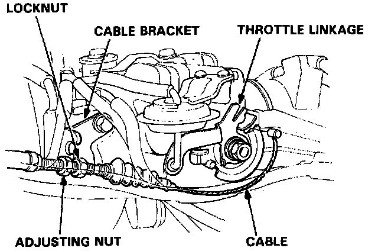
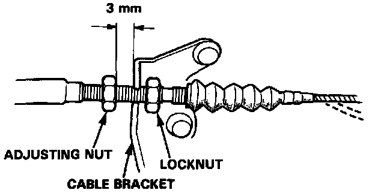

Throttle Cable/Linkage: Service and Repair
Replacement1. Loosen the locknut and remove the throttle cable from the cable bracket.

2. Remove the cable from the throttle linkage.
3. Hold the cable sheath, removing all slack from the cable.
4. Turn the adjusting nut until it is 3 mm away from the cable bracket.

5. Tighten the locknut. The cable deflection should now be 10 - 12 mm (0.39 - 0.47 in.). If not, see Inspection/Adjustment.